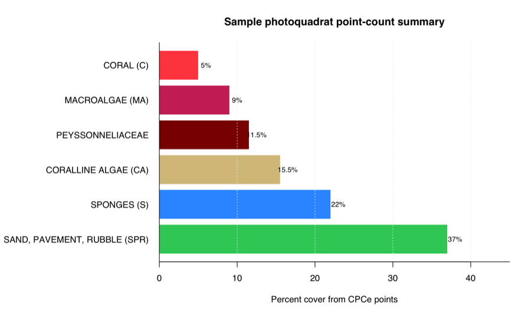
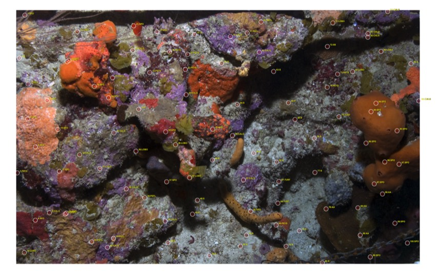

From CPCe points to reviewable coral data products
pointcoral imports local Coral Point Count with Excel extensions (CPCe) annotations, matches points to photoquadrat images, checks labels and coordinates, calculates point-count percent cover, creates visual quality-control overlays, and prepares local machine-learning datasets.
Website · Articles · Reference · News · Citation · Source · Issues · CRAN
Who it serves
pointcoral is for coral-reef analysts, benthic ecologists, image annotators, data managers, and machine-learning practitioners who need to reuse CPCe point annotations without sending project data to a web platform. It runs locally and requires no CoralNet or MERMAID account, cloud API, or Python environment.
-
Import
Read tested text
.cpcfiles, CPCe_rawworkbook tabs, and recognizable point tables. -
Standardize
Preserve raw CPCe codes while optionally joining project-reviewed full labels and ecological classes.
-
Review
Validate coordinates and labels, calculate summaries, and inspect point placement on the source image.
-
Export
Write tidy tables, split-aware point labels, image patches, and sparse weak-label masks.
Installation
Development installation
Install the current development source from GitHub with pak:
install.packages("pak")
pak::pak("el-cordero/pointcoral")Five-minute workflow
The installed package includes two small CPCe files, two matching JPEG images, an example crosswalk, and a small CPCe output workbook. The crosswalk is an illustration, not a universal coral taxonomy or benthic ontology.
library(pointcoral)
example_dir <- system.file("extdata", package = "pointcoral")
points <- read_cpce_folder(
example_dir,
image_root = example_dir,
recursive = FALSE
)
validation <- validate_points(points)
validation
#> # A tibble: 1 × 4
#> check severity n details
#> <chr> <chr> <int> <chr>
#> 1 ok info 0 No validation issues detectedThe raw labels inside the CPCe files are enough to calculate a cover summary:
raw_cover <- summarize_images(points, class_col = "raw_label")
head(raw_cover, 6)
#> # A tibble: 6 × 7
#> site transect image_id raw_label n n_points percent
#> <chr> <chr> <chr> <chr> <int> <int> <dbl>
#> 1 Hole in the Wall HIW_158_W_U-1 HIW_158_W_U-1 AA 4 100 4
#> 2 Hole in the Wall HIW_158_W_U-1 HIW_158_W_U-1 CALG 18 100 18
#> 3 Hole in the Wall HIW_158_W_U-1 HIW_158_W_U-1 LOBO 8 100 8
#> 4 Hole in the Wall HIW_158_W_U-1 HIW_158_W_U-1 P 2 100 2
#> 5 Hole in the Wall HIW_158_W_U-1 HIW_158_W_U-1 PEFL 7 100 7
#> 6 Hole in the Wall HIW_158_W_U-1 HIW_158_W_U-1 PEYS 9 100 9Apply a reviewed crosswalk only when standardized labels are needed:
crosswalk <- read_label_crosswalk(file.path(
example_dir, "pointcoral_example_crosswalk.csv"
))
check_crosswalk(points, crosswalk) |>
dplyr::count(issue_type)
#> # A tibble: 1 × 2
#> issue_type n
#> <chr> <int>
#> 1 unused_in_points 101
points_clean <- standardize_labels(points, crosswalk)
major_cover <- summarize_images(points_clean, class_col = "major_category")
head(major_cover, 6)
#> # A tibble: 6 × 7
#> site transect image_id major_category n n_points percent
#> <chr> <chr> <chr> <chr> <int> <int> <dbl>
#> 1 Hole in the Wall HIW_158_W_U-1 HIW_158_… CORAL (C) 5 100 5
#> 2 Hole in the Wall HIW_158_W_U-1 HIW_158_… CORALLINE ALG… 18 100 18
#> 3 Hole in the Wall HIW_158_W_U-1 HIW_158_… MACROALGAE (M… 11 100 11
#> 4 Hole in the Wall HIW_158_W_U-1 HIW_158_… PEYSSONNELIAC… 16 100 16
#> 5 Hole in the Wall HIW_158_W_U-1 HIW_158_… SAND, PAVEMEN… 23 100 23
#> 6 Hole in the Wall HIW_158_W_U-1 HIW_158_… SPONGES (S) 27 100 27
Core outputs
- tidy point tables that retain original CPCe codes and coordinates;
- image-, transect-, site-, or custom-group point-count summaries;
- crosswalk and point-table validation reports;
- annotated source images for coordinate and label review;
- train/validation/test labels split by image, transect, or site;
- point-centered classification patches; and
- sparse masks whose unlabeled pixels remain an ignore value.

Assumptions and interpretation boundaries
Point-count output is design dependent. Percent cover is the percentage of retained points assigned to a label within the requested grouping. Its ecological interpretation depends on point placement, annotation quality, image selection, sampling design, and any aggregation across images, transects, sites, or dates.
-
read_cpce_file()is tested against the bundled text.cpcstructure; other CPCe variants require project-level verification. - Image matching uses file basenames. Duplicate basenames are ambiguous and should be resolved before analysis.
- CPCe coordinates are proportionally scaled to image pixel dimensions. Both axes use pixel units; inspect QC overlays whenever source geometry differs.
- Raw labels are always preserved. The bundled crosswalk must be checked against the project’s CPCe codefile before final ecological interpretation.
- Split by image, transect, or site as appropriate to prevent related points from leaking across model evaluation subsets.
- Sparse masks label only small disks around annotated points. They are weak supervision, not dense human-verified segmentation truth.
- The package prepares data products; it does not establish taxonomic correctness, sampling representativeness, model accuracy, or ecological causation.
See interpretation and limitations for the full guidance.
CPCe method reference
Kohler, K. E. and Gill, S. M. (2006). Coral Point Count with Excel extensions (CPCe): A Visual Basic program for the determination of coral and substrate coverage using random point count methodology. Computers & Geosciences, 32(9), 1259–1269. doi:10.1016/j.cageo.2005.11.009.
Run citation("pointcoral") for the package citation.
Documentation, support, and participation
- Get started
- Worked examples
- Function reference
- Issue tracker
- Contributing guide
- Code of Conduct
- Support guide
- Security policy
Do not post confidential images, exact sensitive-site locations, private project identifiers, credentials, or restricted ecological data in public issues.